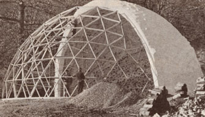

"A cordwood-geodesic-dome-solar-greenhouse? That's what we're building?!!"
A lot of people attended MOTHER's Summer of 1979 seminars held at our ever improving Ecological Research Center . . . and a good number of those visitors were bighearted enough to chip in on a very unusual building project, a project that just sort of happened to happen!
It all started when Jack Henstridge -the self-educated stackwood construction expert who was teaching his lowcost building technique as part of MOTHER's Earth-Sheltered Homes seminar decided to offer our students a chance to "get their hands dirty". So Jack found an open spot and-along with his pupils began splitting log rounds . . . mixing sand, lime, water, and cement . . . and building one of the billet-and-mortar structures known as a stackwood wall.
Before long, a whole lot of seminar folks got stricken with the legendary "Tom Sawyer fence painting" syndrome and pitched right in on the project. All of a sudden, Jack Henstridge found himself in the midst of an on-the-spot stackwall construction movement. A lot of go-get-'em volunteer workers were sawing and splitting and stacking and slapping cement and sweating up a storm and having a fine of barn-raising-type good time building the gracefully curved structure . . . the only question was, what in blue blazes were all these good-natured people actually constructing?
Well, the half-dome of cordwood has been finished since then, and MOTHER researcher Emerson Smyers has come up with his own innovative way of constructing a translucent geodesic half do me to match it. Emerson has also figured out how to attach the glass-triangled structure to the already completed, south-facing stackwood-and-cement creation . . . and the result will be a geodesic-dome fronted, wood-wall-backed solar greenhouse!
As this article is being written, our EcoVillage staffers are putting the finishing touches on the "two-tone" dome. And in the next issue of this magazine we hope to be able to show you one of the most down-home stylish (and unique) hothouses ever constructed!
Still, nobody around these parts has forgotten that the whole masterpiece never would have come to be at all, had it not been for our unstoppable seminar visitors . . . who just couldn't resist the chance to get themselves a few splinters, and scratched-up hands, and stinging blisters, and sore back muscles by chipping in on Jack Henstridge's demonstration project. So to all those helpful folks -whoever you are and wherever you may now be-who had the biggest part in making this "geodesic cordwood greenhouse" a reality, MOTHER says, "Keep on stacking" . . . "May your woodlot always be full" . . . and "Thanks! "
EDITOR'S NOTE': You can learn about Jack Henstridge's stackwood home building success by reading his article, "We Built a $75,000 House. . . for Only $10,000!" in MOTHER NO. 45, page 96 (available for $3.00-plus $1.00 shipping and handling-from THE Mother Earth News°, P.O. Box 70, Hendersonville, North Carolina, 98739). Two construction guides to the inexpensive building method are Jack's own Building the Cordwood Home ($6.00) and the Northern Housing Committee of the University of Manitoba's Stackwall: How to Build It ($12.00). Both books are are available for their list prices plus 950 shipping and handling-from Mother's Bookshelf, P.O. Box 70, Hendersonville, North Carolina 28739.
And, for information about this coming summer's seminar program, turn to page 180 of this publication.
|
 |
|
|